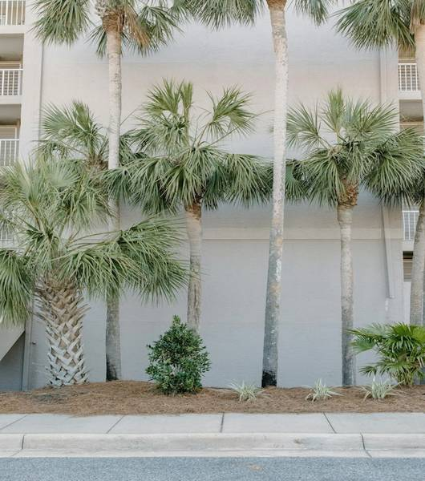

John Doe est un photographe passionné qui capture des images de la nature, des événements et des personnes.

Des palmiers pour un voyage haut en couleurs.

Un coucher de soleil sur une nation flamboyante.

La mer comme seul horizon.

La mer comme grande source d'inspiration.
Services
John Doe propose une gamme de services :
- Photographie de la nature
- Photographie d'événements
- Portraits
- Retouche photo
Contact
Email : john@photography.com
Téléphone : 123-456-7890